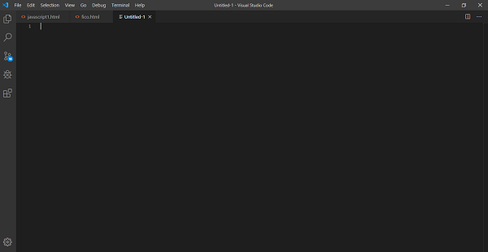
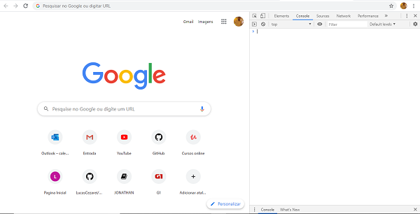

1- Instalações
O JavaScript é muito simples de ser utilizado, você apenas precisa de uma IDE para codificação para inicia-lo.
Como por exemplo:
Visual Studio Code - Notepad++ - Netbeans
Links para instalação:
Observação: No meu caso, será utilizado o Visual Studio Code.

O Javascript ele apenas é uma extensão dentro dessas plataformas que será executado via Browser (Navegador).
Explore - Google Chrome - Mozilla
Observação: No meu caso, será utilizado o Google Chrome.

Observação: Você irá acessar o console do seu navegador para realização de testes do seu codigo Javascript.
(Botão Direito na tela) - Inspecionar - Console
Pronto, você já está preparado para iniciar o curso. Vamos lá !!
2- Sequencial
O JavaScript é muito simples de ser utilizado, você apenas precisa de uma IDE para codificação para inicia-lo.
Como por exemplo:
Visual Studio Code - Notepad++ - Netbeans
Links para instalação:
Observação: No meu caso, será utilizado o Visual Studio Code.
O Javascript ele apenas é uma extensão dentro dessas plataformas que será executado via Browser (Navegador).
Explore - Google Chrome - Mozilla
Observação: No meu caso, será utilizado o Google Chrome.
Observação: Você irá acessar o console do seu navegador para realização de testes do seu codigo Javascript.
(Botão Direito na tela) - Inspecionar - Console
Pronto, você já está preparado para iniciar o curso. Vamos lá !!
Mais Tutoriais - JavaScript
2º Etapa - Utilizando do javascript:
3º Etapa - Intermediario:
4º Etapa - Avançado - Em construção